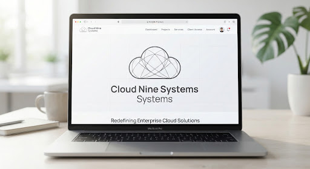

Perside DEGBE
SOC Analyst & Application Security
Passionate about securing systems and developing robust applications. I combine technical expertise in threat analysis (SOC, Zeek, MITRE ATT&CK) and secure programming (HTML/PHP) to protect digital infrastructures.

Expertise & Services
A comprehensive approach to digital defense, aligning real-time threat auditing with robust application hardening workflows.

SOC Operations and Monitoring
Continuous perimeter monitoring, telemetry data analysis, and log correlation (Zeek, Wireshark). Implementing defensive strategies aligned with the MITRE ATT&CK framework.
Audits and Penetration Testing
Offensive simulations are executed in deployment environments (Kioptrix labs), mapping infrastructure weaknesses, testing lateral mobility, and identifying privilege escalation vectors.
Application Security (AppSec)
Static and dynamic analysis of source code, payload input filtering controls, and structural shielding against active OWASP Top 10 exploits.
System Hardening & Remediation
Secure node provision blueprints across target systems (Linux/Windows OS), automated tracking workflows, and system patching sequences triggered via EMN Machine event logs.

Technical Rigor at the Service of Your Security
Graduated from the École des Métiers du Numérique (EMN) and holding a Bachelor's Degree, I have built a strong engineering culture centered around defensive strategies and systemic threat remediation.
My operational commitment remains distinct: auditing application stacks against edge vectors (OWASP Top 10) and hardening nodes to dismantle threat models. Converging infrastructure engineering and defensive analysis empowers me to inspect software systems from within.
Explore my full background arrow_forward


Academic & Professional Support
"Perside showed great autonomy during her internship. Her rigorous integration of Figma designs into WordPress and her clear focus on environment security were highly appreciated."

"A serious student who is deeply passionate about network defense challenges. Her technical lab work on SOC attack simulations like the EMN Machine shows excellent methodology."

"Perside possesses a very compelling dual skill set in code and security. Her engagement in the secure HTML/PHP telemedicine management platform project was exemplary."

Ready to Secure Your Infrastructure?
Looking for a rigorous collaborator to reinforce your SOC operations or audit your web applications? Let's discuss your cybersecurity challenges.